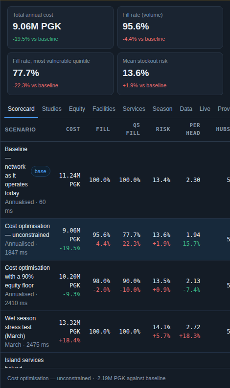
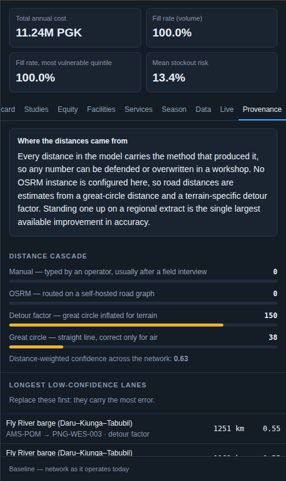
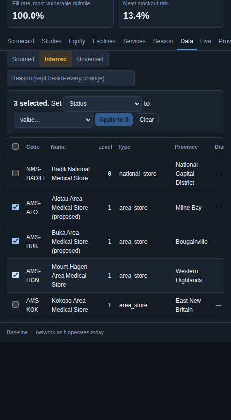
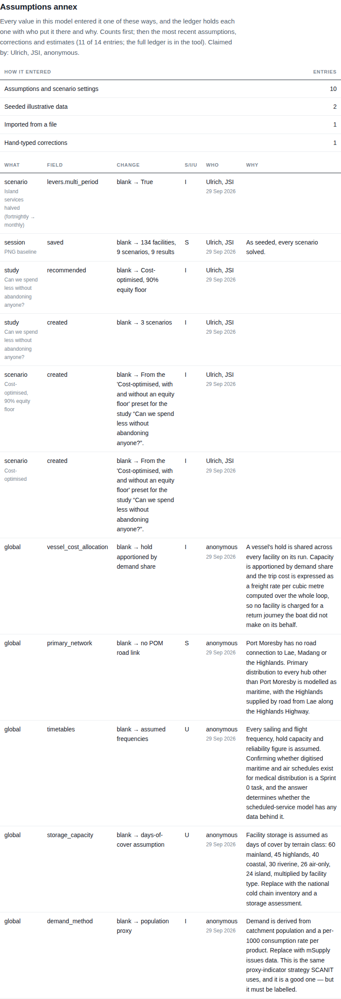

03 · Trust the answer
Every figure traceable, every answer tested
A ministry buys defensibility. The tool records where every value came from and who claims it, re-solves every run with its estimates a third either way, and writes the assumptions annex from the record rather than from memory.
The confidence budget
When any demand is estimated, every run solves the scenario twice more with every estimated figure 30% lower and 30% higher. The scorecard then says whether the answer holds: the same stores stay open, the plan stays feasible, and an option that was cheaper than today stays cheaper with today's network pushed the same way.

The ledger
Seeded, imported, synced, typed, estimated, reverted: every value that entered the model, with a name, a marker of how sure, and a reason.


The assumptions annex

A name, not a login
There are no accounts yet. The name you sign with is a claim stored beside every change. When accounts arrive each claim maps to a user by a migration rather than a rewrite, and the audit trail is honest from day one. Verified by 538 automated tests on every build and an automated WCAG 2.1 AA check on every screen.